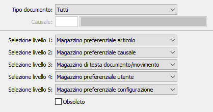

La tabella consente di configurare, per singola tipologie di documento e/o causale, come attribuire il magazzino al rigo del documento.

Per ogni tipologia di documento gestita, è possibile parametrizzare la ricerca del magazzino per singola causale e su cinque livelli. Le opzioni presenti nei livelli possono cambiare a seconda del tipo documento che viene selezionato, ad esempio: se scelgo i movimenti di magazzino avrò nei livelli il magazzino di testa che su altre tipologie di documento non sarà presente. Se inserisco un criterio per Tutti i documenti avrò attive tutte le opzioni che però saranno considerate solo se compatibili con il tipo documento che sarà utilizzato.
TIPO DOCUMENTO: indica il tipo di documento per cui effettuare l'associazione:
Tutti
Ddt cliente
Fattura cliente
Ordine cliente
Packing list
Offerta cliente
Vendita al dettaglio
Ordine fornitore
Ddt fornitore
Fattura fornitore
Richiesta di offerta
Richiesta di acquisto
Autofattura
Liste di prelievo
Disposizione
Movimento di magazzino
Movimento magazzino fasi
Ordine terzista
DDT terzista
Fattura terzista
CAUSALE: indica la causale del documento, del tipo indicato precedentemente, per cui si vuole specificare la parametrizzazione della ricerca del magazzino. Sul campo sono attive le funzioni di ricerca sulla tabella stessa. Se il campo viene lasciato vuoto si intende tutte le causali del tipo documento, eccetto le causali specificate singolarmente.
SELEZIONE LIVELLI: vengono utilizzati per indicare la struttura con cui ricercare il magazzino da riportare sul rigo del documento; dall'anagrafica articoli, dalla causale del documento, dalle preferenze dell'utente, dalla configurazione, dalla testa del documento/movimento oppure livello non gestito; la ricerca avviene nell'ordine visualizzato, dal livello 1 al 5:
Nessuno
Magazzino preferenziale articolo
Magazzino preferenziale causale
Magazzino preferenziale utente
Magazzino preferenziale configurazione
Magazzino di testa documento/movimento